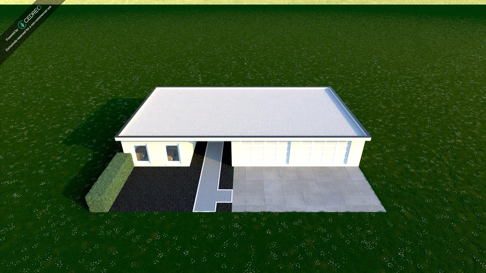
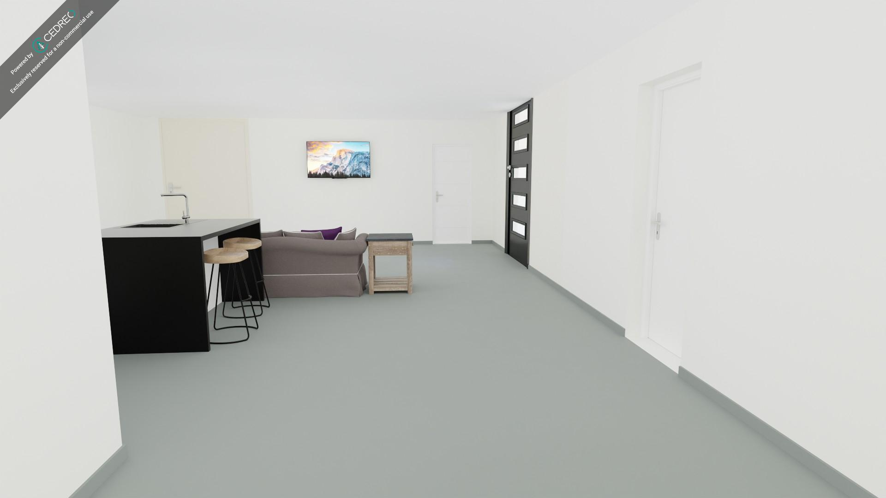

The Lego house build was one of our first assignments done in our enginering and architecture class. The assignment was to create a lego house using a specified amount of blocks in. There were no parameters or regulations as to how the house had to be build, it just had to have the intent of being a house. My house here is a pool house on wheels. There is a pool on top of the house with the main living area in the middle. Then the bottom part has wheels to be able to take the house wherever.
The Cedreo house assignment was one of most unique and interesting assignments I have ever done in school. The Cedreo house assignment was to design a house to our specified desire. The only requirement was that the house was not to exceed 1000 sq. ft.. The program cedreo is a 3D house design software that allows users to create 3D models and 3D renderings of whatever they create. The program was fairly easy to use with very little difficulty managing the UI. Belwo are two images of the hosue I created. I highly reccoment the program to anybody interested in designing their own house for fun, or even for professional use.
 In our roof styles assignment, we took real-world architectural styles and learned how to create them in SketchUp. Many roof styles involved designing a 2D shape first and then using the Push/Pull tool to convert it into a 3D shape. Other techniques included outlining the roof with the Line tool and connecting lines to complete the structure. This assignment provided experience in how the Line, Offset, and Push/Pull tools work together to create various roof types. My project includes 8 kinds of roofs: Cross Gable, Front Gable, Gambrel, Hipped, Mansard, Pavilion Hipped, Saltbox, and Side Gabled. Below, I have included a presentation of each roof style in SketchUp in a YouTube video.
For this project, we used TinkerCAD and bambu lab in order to create PLA 3D printed intial Keychains. The processs involved using the sketch tool in TinkerCAD. The Sketch tool allows for users to make their own shapes using a drag and drop tool to connect dots. Then from TinkerCAD, the design was exported to Bambu Labs through an STL format.